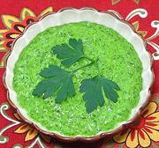

|
Cilantro Sauce / MojoSpain - Canary Islands - Mojo de Cilantro | ||||
| Makes: Effort: Sched: DoAhead: |
10 oz ** 30 min Yes |
This sauce/dip (pronounced "moho") is used with fish, potatoes and fresh cheese, as a sauce, dip or marinade. Similar sauces sare used in the Caribbean and South America. | |||
| Cilantro was once the top herb in most of Europe, taken to the Canary Islands, the New World, and Asia by European traders. In Europe it has been almost entirely replaced by parsley, but the Canary Islands and Latin America are still very big on Cilantro, as is most of Asia. | |||||
|
|
1 6 3 1/2 2/3 3 |
c cl oz t c T |
Cilantro Leaves (1) Garlic Bell Pepper, grn Salt Olive Oil, ExtV Wine Vinegar, white |
Make - (30 min - mostly for pulling cilantro leaves)
|